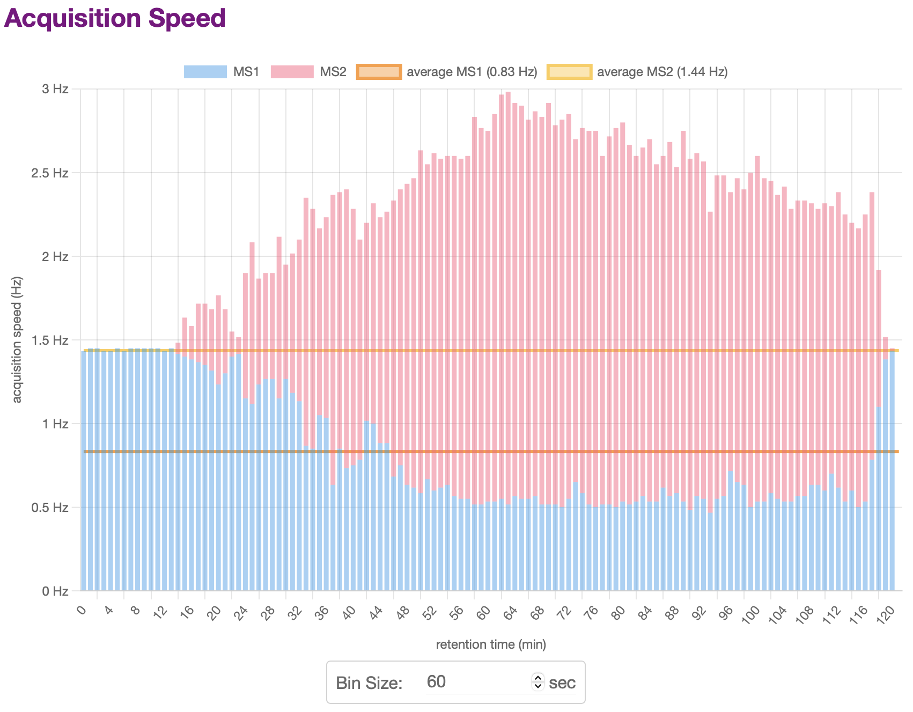
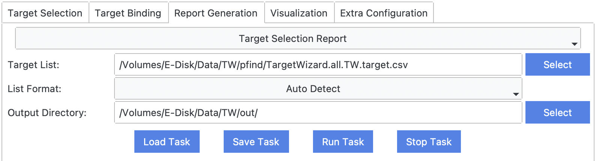
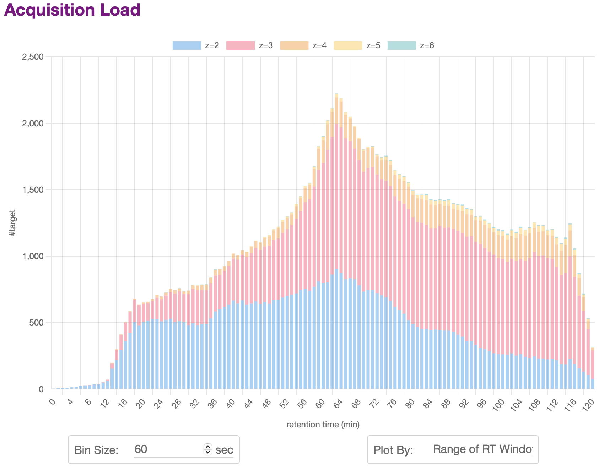
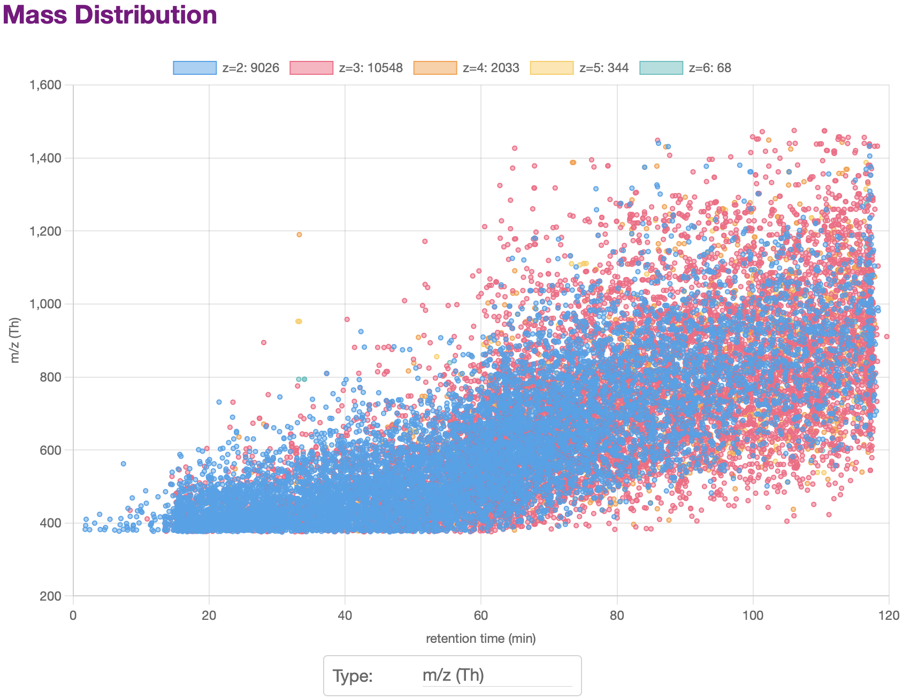
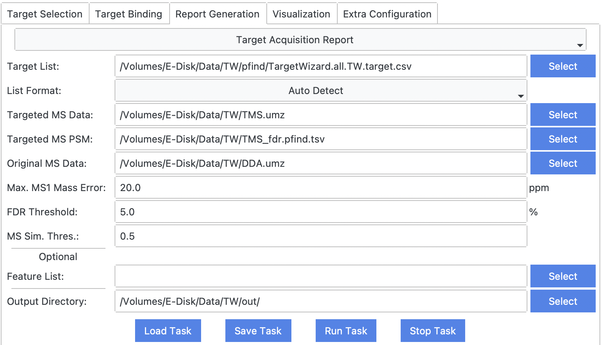
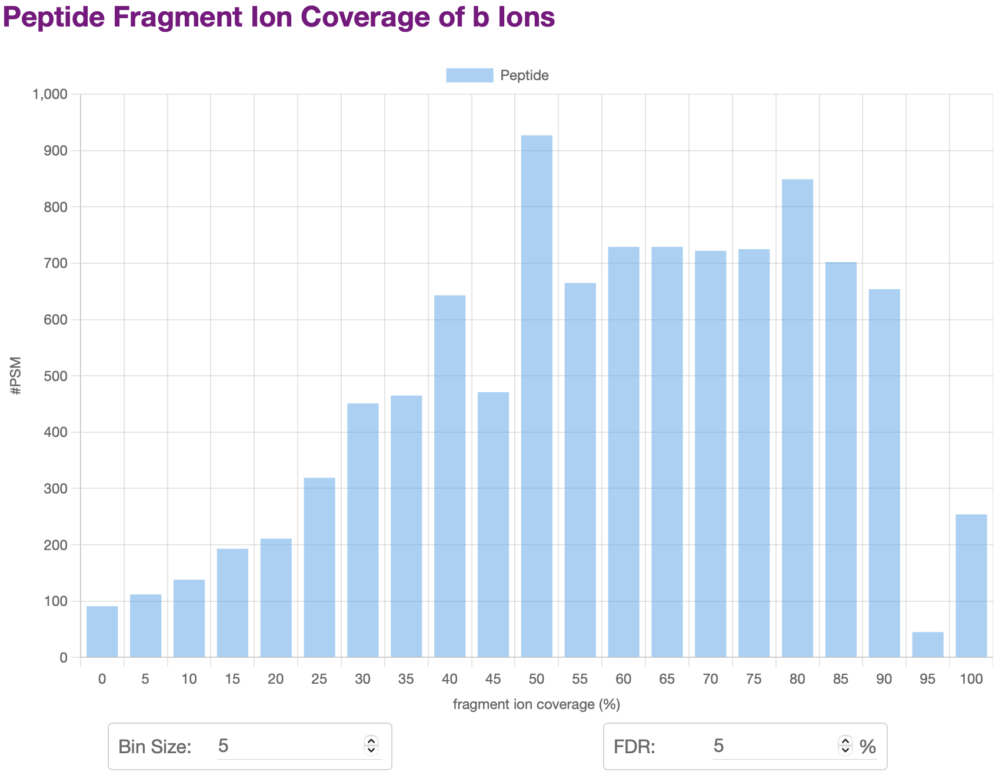
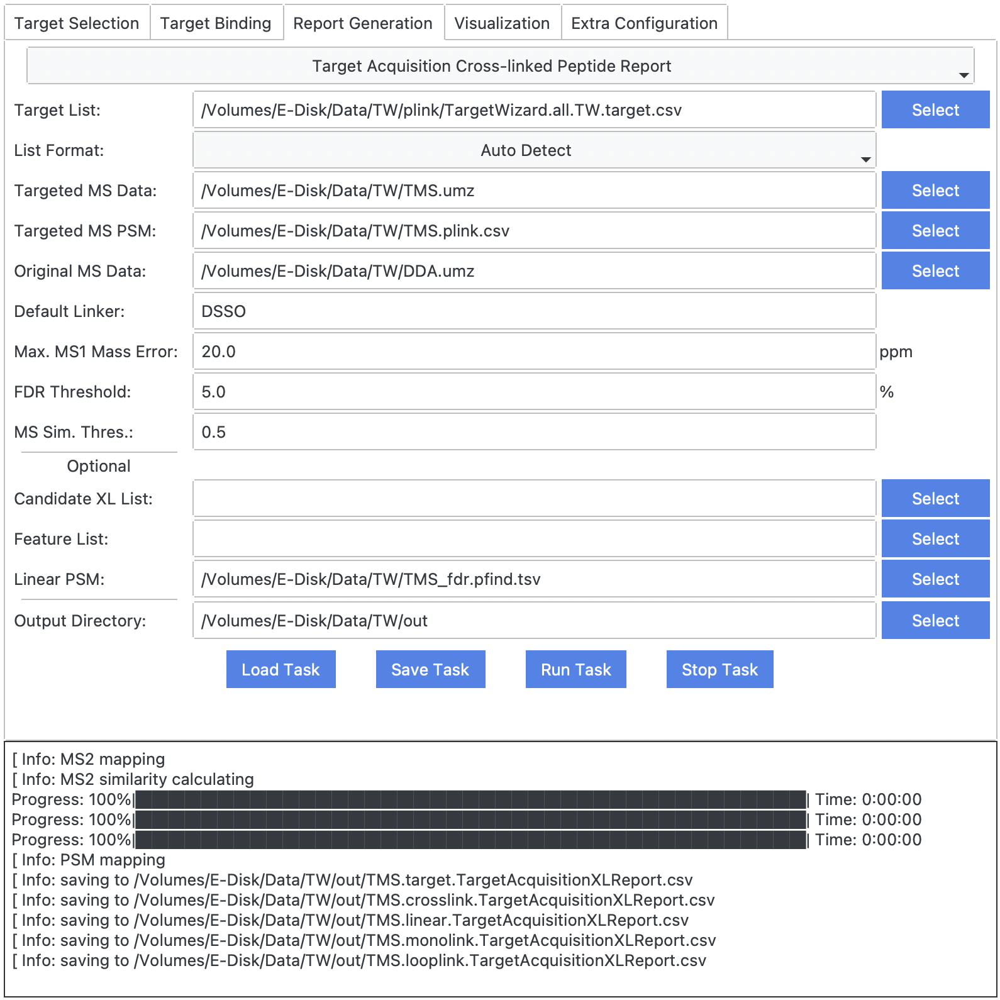
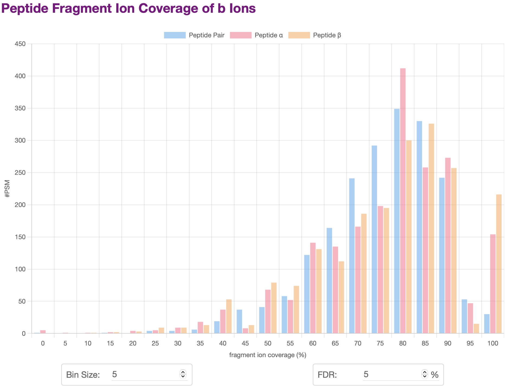
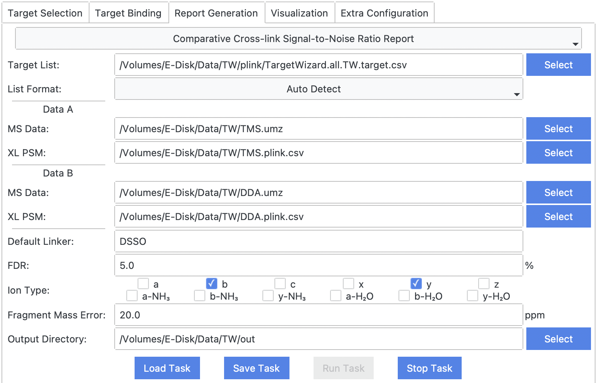

Analysis Reports
- Basic Acquisition Report
- Target Selection Report
- Target Acquisition Report
- Peptide Coverage Report
- Target Acquisition Report for Crosslink
- Peptide Coverage Report for Crosslink
- Comparative Signal-to-Noise Ratio Report for Crosslink
Basic Acquisition Report
TargetWizard.BasicAcquisitionReport — ModuleBasic Data Acquisition Report
Requirements
TargetWizard.BasicAcquisitionReport.require — Constant- traditional or targeted mass spectrometry data, e.g.,
TMS.raw.- The raw data should be converted into an open-source format such as MS1/MS2. ThermoRawRead is recommended.
Output Results
TargetWizard.BasicAcquisitionReport.output — ConstantOnce finished, TargetWizard will save a report to Output Directroy, and open the report automatically in a web browser.
htmlreport, e.g.,BasicAcquisitionReport.html(example).
Usages
TargetWizard.BasicAcquisitionReport.usage — Constant
Examples
TargetWizard.BasicAcquisitionReport.example — ConstantThe report will show statistics plots of the MS data, including:
- Acquisition Speed
- Activation Center
- Ion Injection Time
- Total Ion Current (TIC), Base Peak Intensity (BPI), Base Peak Mass (BPM)
- …
For many plots, you can change the settings including RT range, barplot bin size, etc. The plot will be updated automatically.
You can also click the legend of a plot to hide or display some items.
 
Target Selection Report
TargetWizard.TargetSelectionReport — ModuleTarget Selection Report
Requirements
TargetWizard.TargetSelectionReport.require — Constant- target list (multiple formats supported), e.g.,
TargetWizard.all.TW.target.csv.
Output Results
TargetWizard.TargetSelectionReport.output — ConstantOnce finished, TargetWizard will save a report to Output Directroy, and open the report automatically in a web browser.
htmlreport, e.g.,TargetSelectionReport.html(example).
Usages
TargetWizard.TargetSelectionReport.usage — Constant
Examples
TargetWizard.TargetSelectionReport.example — ConstantThe report will show statistics plots of the MS data, including:
- Acquisition Load
- Charge State Distribution
- Mass Distribution
- …
For many plots, you can change the settings including RT range, barplot bin size, etc. The plot will be updated automatically.
You can also click the legend of a plot to hide or display some items.
 
Target Acquisition Report
TargetWizard.TargetAcquisitionReport — ModuleTarget Acquisition Report
Requirements
TargetWizard.TargetAcquisitionReport.require — Constant- target list (multiple formats supported), e.g.,
TargetWizard.all.TW.target.csv. - traditional and targeted mass spectrometry data, e.g.,
DDA.rawandTMS.raw.- The raw data should be converted into an open-source format such as MS1/MS2. ThermoRawRead is recommended.
- (filtered) identification results of targeted mass spectrometry data, e.g.,
TMS_fdr.pfind.csv. - optional: precursor list detected by
PepPre
Output Results
TargetWizard.TargetAcquisitionReport.output — ConstantOnce finished, TargetWizard will save two reports to Output Directroy.
csvreport of all targets, e.g.,TMS.target.TargetAcquisitionReport.csv.csvreport of all PSMs, e.g.,TMS.psm.TargetAcquisitionReport.csv.
Usages
TargetWizard.TargetAcquisitionReport.usage — ConstantMax. MS1 Mass Error
mass error used to match targets, PSMs, and MS scans.
FDR Threshold
used to filter PSM list.
MS Sim. Thres.
used to match traditional and targeted MS scans.

Examples
TargetWizard.TargetAcquisitionReport.example — ConstantPeptide Coverage Report
TargetWizard.PeptideCoverageReport — ModulePeptide Fragment Ion Coverage Report
Requirements
TargetWizard.PeptideCoverageReport.require — Constant- (filtered) identification results of targeted mass spectrometry data, e.g.,
TMS_fdr.pfind.csv. - traditional or targeted mass spectrometry data, e.g.,
TMS.raw.- The raw data should be converted into an open-source format such as MS1/MS2. ThermoRawRead is recommended.
Output Results
TargetWizard.PeptideCoverageReport.output — ConstantOnce finished, TargetWizard will save reports to Output Directroy, and open a html report automatically in a web browser.
htmlreport, e.g.,PeptideCoverageReport.html(example).csvreport including detailed fragment information.
Usages
TargetWizard.PeptideCoverageReport.usage — Constant
Examples
TargetWizard.PeptideCoverageReport.example — ConstantThe report will show statistics plots of fragment ion coverage of peptides, including:
- Overall Peptide Coverage Distribution
- Peptide Coverage Distribution of Specific Ion Types
- …
For many plots, you can change the settings including barplot bin size, FDR, etc. The plot will be updated automatically.
You can also click the legend of a plot to hide or display some items.

Target Acquisition Report for Crosslink
TargetWizard.TargetAcquisitionXLReport — ModuleTarget Acquisition Report for Crosslink
Requirements
TargetWizard.TargetAcquisitionXLReport.require — Constant- target list (multiple formats supported), e.g.,
TargetWizard.all.TW.target.csv. - traditional and targeted mass spectrometry data, e.g.,
DDA.rawandTMS.raw.- The raw data should be converted into an open-source format such as MS1/MS2. ThermoRawRead is recommended.
- (filtered) crosslink identification results of targeted mass spectrometry data, e.g.,
TMS.plink.csv. - optional: (filtered) linear peptide identification results of targeted mass spectrometry data, e.g.,
TMS_fdr.pfind.csv. - optional: precursor list detected by
PepPre - optional: candidate crosslink list
Output Results
TargetWizard.TargetAcquisitionXLReport.output — ConstantOnce finished, TargetWizard will save two reports to Output Directroy.
csvreport of all targets, e.g.,TMS.target.TargetAcquisitionXLReport.csv.csvreport of all crosslink PSMs, e.g.,TMS.crosslink.TargetAcquisitionXLReport.csv.csvreport of all linear peptide PSMs, e.g.,TMS.linear.TargetAcquisitionXLReport.csv.csvreport of all monolink PSMs, e.g.,TMS.monolink.TargetAcquisitionXLReport.csv.csvreport of all looplink PSMs, e.g.,TMS.looplink.TargetAcquisitionXLReport.csv.
Usages
TargetWizard.TargetAcquisitionXLReport.usage — ConstantMax. MS1 Mass Error
mass error used to match targets, PSMs, and MS scans.
FDR Threshold
used to filter PSM list.
MS Sim. Thres.
used to match traditional and targeted MS scans.

Examples
TargetWizard.TargetAcquisitionXLReport.example — ConstantPeptide Coverage Report for Crosslink
TargetWizard.PeptideCoverageXLReport — ModulePeptide Fragment Ion Coverage Report for Crosslink
Requirements
TargetWizard.PeptideCoverageXLReport.require — Constant- (filtered) identification results of targeted mass spectrometry data, e.g.,
TMS_fdr.pfind.csv. - traditional or targeted mass spectrometry data, e.g.,
TMS.raw.- The raw data should be converted into an open-source format such as MS1/MS2. ThermoRawRead is recommended.
Output Results
TargetWizard.PeptideCoverageXLReport.output — ConstantOnce finished, TargetWizard will save reports to Output Directroy, and open a html report automatically in a web browser.
Usages
TargetWizard.PeptideCoverageXLReport.usage — Constant
Examples
TargetWizard.PeptideCoverageXLReport.example — ConstantThe report will show statistics plots of fragment ion coverage of peptide pairs or α/β peptides, including:
- Overall Peptide Coverage Distribution
- Peptide Coverage Distribution of Specific Ion Types
- …
For many plots, you can change the settings including barplot bin size, FDR, etc. The plot will be updated automatically.
You can also click the legend of a plot to hide or display some items.

Comparative Signal-to-Noise Ratio Report for Crosslink
TargetWizard.NoiseRatioDualXLReport — ModuleComparative Signal-to-Noise Ratio Report for Crosslink
Requirements
TargetWizard.NoiseRatioDualXLReport.require — Constant- target list (multiple formats supported), e.g.,
TargetWizard.all.TW.target.csv. - two sets of traditional or targeted mass spectrometry data, e.g.,
DDA.rawandTMS.raw.- The raw data should be converted into an open-source format such as MS1/MS2. ThermoRawRead is recommended.
- two sets of (filtered) crosslink identification results of targeted mass spectrometry data, e.g.,
DDA.plink.csvandTMS.plink.csv.
Output Results
TargetWizard.NoiseRatioDualXLReport.output — ConstantOnce finished, TargetWizard will save two reports to Output Directroy.
csvreport of all targets, e.g.,TargetWizard.all.TW.target.NoiseRatioDualXLReport.csv.csvreports for each set of crosslink identifications, e.g.,DDA.plink.NoiseRatioDualXLReport.csvandTMS.plink.NoiseRatioDualXLReport.csv.
Usages
TargetWizard.NoiseRatioDualXLReport.usage — Constant
Examples
TargetWizard.NoiseRatioDualXLReport.example — Constant